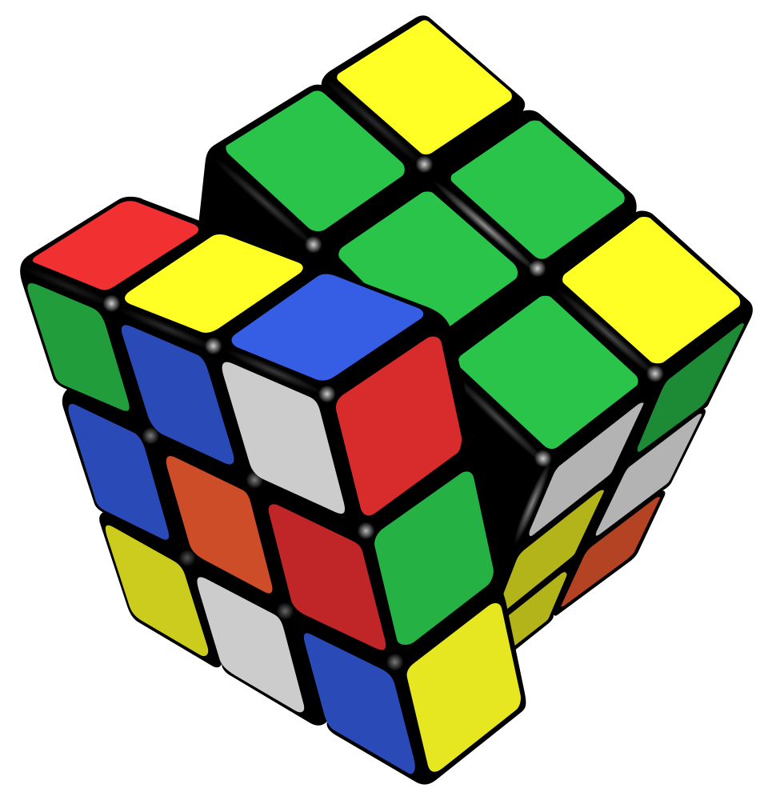
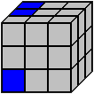
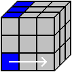
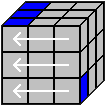
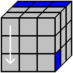
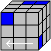
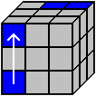
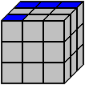

Wstęp do ukladania kostki "Rubik's 3x3x3"
43 tryliony (43 252 003 274 489 856 000) możliwych kombinacji ułożeń kostki 3x3 i tylko 1 raz (słownie: jeden!) kostka jest ułożona. Niesamowite, prawda? Jeszcze lepsze jest to, że po skończeniu tego kursu będziesz w stanie ułożyć każdy (!) z tych wariantów bez mrugnięcia okiem. Wszystko czego Ci trzeba to: Kostka Rubika w wersji 3x3 – bez niej raczej ciężko, chociaż można też on-line umiejętność rozróżniania kolorów - dosyć istotne, choć nie aż tak ważne... wiedza o tym, która to prawa ręka, a która lewa – bywa naprawdę pomocne :-) odrobina wyobraźni i nieco więcej cierpliwości – to ostatnie może się przydać…
Home
Pierwsze i najważniejsze: Kostka Rubika jest dla każdego, także dla Ciebie! Kostka Rubika nie jest zabawką dla wybrańców, nawet jeśli część z nich tak uważa sugerując innym, że do jej ułożenia trzeba być mózgiem na miarę Einsteina... Prawda jest taka, że nie są potrzebne do tego absolutnie żadne specjalne umiejętności :) Aby układać kostkę Rubika nie potrzebujesz także znać jakichś magicznych sztuczek, bo wszystko opiera się na pewnych algorytmach, gotowych schematach ruchów. Wystarczy się ich nauczyć :) Nie ma jednej uniwersalnej metody układania kostki Rubika, a sposobów na poradzenie sobie z kolorowym sześcianem jest co najmniej kilka. Jedne pozwalają układać w czasie poniżej 10 sekund, inne pozwalają ... po prostu układać. Tym pierwszym musisz poświęcić wiele godzin, a nawet tygodni i miesięcy systematycznego treningu, tym drugim... o wiele, wiele mniej o czym już niedługo się przekonasz :) Metoda, którą prezentuję na niniejszym kursie należy zdecydowanie do tych ostatnich, więc jeśli szukasz czegoś do pobijania rekordów, to przykro mi to mówić, ale: nie ten adres. Spragnionym medali i miejsca na podium oraz międzynarodowej sławy polecam dział linki - jest tam kilka drogowskazów.
Zanim rozpoczniesz ten kurs, musisz zrozumieć, że Kostki Rubika nie układa się tak, że najpierw jedna ściana, potem druga, trzecia itd. W opisanej przeze mnie metodzie wygląda to raczej tak, że najpierw układasz górną ścianę, potem pierwszy górny rząd, uzupełniasz drugi rząd, potem rogi trzeciego rzędu, spód i na koniec środkowe kosteczki trzeciego rzędu każdej ze ścian. Bardzo często (ale tylko na chwilę) trzeba będzie coś zburzyć, by coś ułożyć. Nie przejmuj się tym, bo oto właśnie w tym wszystkim chodzi. Szybko się zorientujesz, że to jest naprawdę proste. Konstrukcja kursu jest tak zbudowana, że podaję wskazówki tylko dla konkretnych przypadków jakie spotkasz w trakcie układania. Nie znajdziesz więc tutaj opisu ułożenia jednego określonego wariantu pomieszanej kostki - jednego, wybranego spośród 43 trylionów... I wcale nie dlatego, że nie potrafiłem się zdecydować, który wybrać :) Zauważ jednocześnie, że wraz z Twoimi postępami moja pomoc staje się mniej rozbudowana. Z początku masz do dyspozycji obrazki do każdego ruchu + odpowiedni opis, ale na końcu masz już tylko opis. Jednocześnie, gdy rozpoczynam daną lekcję, zakładam że poprzednie masz już opanowane i nie wracam do tego co już umiesz. Do kolejnych lekcji przejdź dopiero wtedy, gdy poprzednie będą opanowane do perfekcji. Zaliczenie kursu przy jednym podejściu to nie jest najlepszy pomysł. Oczywiście tak też się da, ale zgodzisz się ze mną chyba, że chodzi tutaj o to, by co nieco zapamiętać. Dla Twojej wygody: najpierw przeczytaj daną lekcję i pooglądaj obrazki, a potem zacznij się uczyć! Dlaczego? Otóż dlatego, że nierzadko kilka linijek niżej możesz odkryć cenną wskazówkę, która pomoże Ci w układaniu, a której z wielu względów nie mogłem lub nie chciałem napisać wyżej. Prędzej czy później zauważysz też, że... pewne ruchy można pominąć, a pewne wykonać w innej kolejności. Pamiętaj, że to Twoja kostka i możesz ją sobie układać jak Ci się tylko podoba :)
About
Górna ściana
srodkowy rzad
dolna ściana
przednia ściana
tylna ściana
narozniki
lewa sciana
środek
prawa ściana
pierwszy rząd przedniej ściany
drugi rząd przedniej ściany
trzeci rząd przedniej ściany
ruch:lewa ściana w górę
ruch: prawa ściana w dół
ruch:dolna ściana w prawo
ruch: przednia ściana w prawo
ruch:cała kostka rubika w prawo
kolory ścian:przednia: czerwona góra: niebieska prawa: no, jaka?
Solutions
Spójrz na obrazek obok. Na górnej ścianie masz dwa elementy w Twoim kolorze. Trzeci brakujący znajduje się w trzecim rzędzie przedniej ściany. Teraz, wykonaj w myślach następujący ruch: lewa ścianą raz w górę. Czy widzisz oczami wyobraźni gdzie powędruje kosteczka z trzeciego rzędu? Jakie miejsce zajmie na górnej ścianie? Tak! Dokładnie, stanie się narożnikiem lewej, przedniej i górnej ściany oraz uzupełni kolorem górną ścianę. Niestety przy wspomnianym ruchu utracisz dwa elementy, które są już na górze (staną się elementami tylnej ściany). Poniżej pokażę Ci, co zrobić, by brakujący element umieścić gdzie trzeba i przy okazji nie zgubić pozostałych (istniejących już) elementów górnej ściany.
Zanim zaczniesz kręcić sprawdź, czy na górnej ścianie jest miejsce do bezpiecznego włożenia klocka (tylko bez włochatych myśli...). Porównaj obrazek obok z tym powyżej. Widzisz różnicę? Na pierwszym z nich można uzupełniać górną ścianę bez przeszkód. Na drugim nie jest to możliwe, bo miejsce do włożenia klocka (na górnej ścianie) jest już zajęte przez inny klocek tego samego koloru. Trzeba zatem poszukać innej szansy. Brak możliwości włożenia, a więc: dolna ściana raz w prawo.
Aby sprawdzić, czy możesz bezpiecznie wkładać trzymaj kostkę tak by patrzeć jednocześnie na klocek do włożenia oraz na miejsce, które ma zapełnić. (Przy nabraniu wprawy w układaniu, będzie można sobie ten krok podarować :) Pamiętaj też, by górna ściana była skierowana w sufit...) Patrzymy na wkładany klocek i miejsce do włożenia, a więc: cała kostka raz w lewo.
Sprawdzamy ponownie, czy na górze jest wolne miejsce na włożenie klocka z dolnej ściany. Tym razem odpowiedź brzmi "tak". W takim razie kręcimy. Uważaj jednak, nie możesz wykonać tego samego ruchu co przed chwilą w myślach, bo to co masz już na górnej ścianie ucieknie Ci do tyłu. Jest na to sposób. Klocek, który chcesz włożyć na górną ścianę musisz odłożyć sobie na bok i dopiero wówczas kręcić dalej. (odkładanie na bok w żaden sposób nie wiąże się z użyciem śrubokręta!) Odkładamy klocek do poczekalni a więc: dolna ściana raz w prawo.
Klocek do włożenia odpoczywa sobie na prawej ścianie, a Ty kręcisz ścianą do której chcesz go włożyć. Lewa ściana raz w dół.
Koniec odpoczynku dla klocka na prawej ścianie, czas przetransportować go do góry. Dolna ściana raz w lewo.
Klocek, który chcemy włożyć na górną ścianę siedzi już na swoim miejscu, pora zobaczyć go na górnej ścianie. Lewa ściana raz w górę.
No i gotowe. Górna ściana zyskała kolejny element w swoim kolorze. Ważne! Zauważ, że przy wkładaniu klocka na górną ścianę z lewej strony, pozwalamy mu odpoczywać na prawej ścianie. Sprawdź co by się stało gdyby zrobić na odwrót, czyli odłożyć go na lewą ścianę.